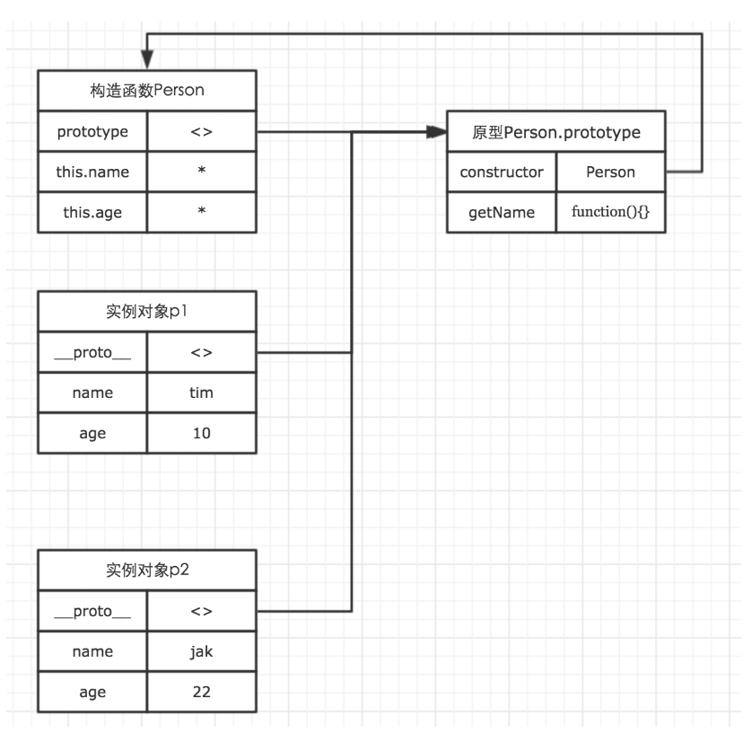
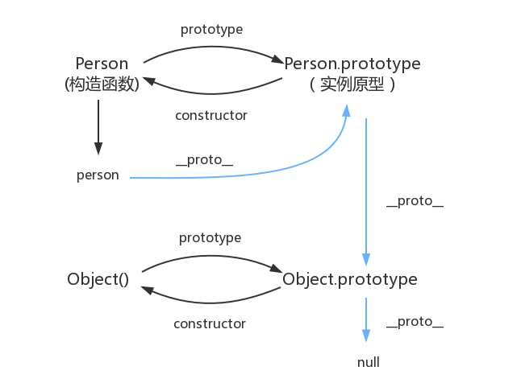

原型，每每看到关于js基础的文章，原型都是绕不开的话题，可见原型是个多么重要的概念。原型，我们在实际工作中可能不会特意注意到它。但我们却切切实实地使用了它。我们创建的每一个函数，都可以有一个prototype属性，该属性指向一个对象，这个对象，就是我们常说的原型对象。
原型
举个例子：
function Person(name, age) {
this.name = name;
this.age = age;
}
Person.prototype.getName = function() {
console.log(this.name);
}
let person1 = new Person('Allen', 24);
let person2 = new Person('Jack', 25);
person1.getName(); // Allen
person2.getName(); // Jack
console.log(person1.getName === person2.getName); // true
我们在Person构造函数的原型对象上面添加了一个getName方法，而每一个new出来的Person实例，都有一个proto属性，这个属性指向Person构造函数的原型对象，通过这个属性，每一个Person实例都可以访问原型对象上的方法和属性，所以上面person1实例和person2实例都可以调用getName方法。
所以，我们从网上找来了一张图，可以清楚地描述这几者之间的关系。

从图中可以看到，在Person的原型对象中，有一个constructor属性，这个属性指向构造函数本身，那么，这个constructor属性是什么呢。
我的理解是，constructor属性用于识别对象是由哪个构造函数初始化的。
let arr = [];
console.log(arr.constructor === Array); // true
其实这里arr数组本身是没有constructor这个属性的，我们输出arr，我们可以看到，arr的proto对象中，有一个constructor属性，这个属性指向Array构造函数。
原型链
当读取实例的属性时，如果找不到，就会查找与对象关联的原型中的属性，如果还查不到，就去找原型的原型，一直找到最顶层为止。
举个例子：
function Person() {
}
Person.prototype.name = 'Allen';
let person = new Person();
person.name = 'Jack';
console.log(person.name); // Jack
delete person.name
console.log(person.name); // Allen
在这个例子中，我们给实例对象person添加了name属性，当我们打印 person.name 的时候，结果自然为Jack。
但是当我们删除了person的name属性时，读取 person.name，从 person 对象中找不到 name 属性就会从 person 的原型也就是 person.proto ，也就是 Person.prototype中查找，幸运的是我们找到了 name 属性，结果为Allen。
这里还需要注意一点，当我们访问实例对象中的属性或者方法时，会优先访问实例对象自身的属性和方法。比如：
function Person(name, age) {
this.name = name;
this.age = age;
this.getName = function() {
console.log('this is constructor.');
}
}
Person.prototype.getName = function() {
return this.name;
}
var p1 = new Person('tim', 10);
p1.getName(); // this is constructor.
在这个例子中，我们同时在原型与构造函数中都声明了一个getName函数，运行代码的结果表示原型中的访问并没有被访问。
原型对象其实也是普通的对象。几乎所有的对象都可能是原型对象，也可能是实例对象，而且还可以同时是原型对象与实例对象。
上面我们说到，当读取实例的属性时，如果找不到，就会查找与对象关联的原型中的属性，如果还查不到，就去找原型的原型，一直找到最顶层为止，那么，最顶层的原型，我的理解是Object.prototype，那Object。prototype指向什么呢。
null，我们可以打印一下。
console.log(Object.prototype.__proto__ === null); // true
null 表示“没有对象”，即该处不应该有值。
所以 Object.prototype.proto 的值为 null 跟 Object.prototype 没有原型，其实表达了一个意思。
所以查找属性的时候查到 Object.prototype 就可以停止查找了。
最后，我又找到了一张清晰的关系图，晒出来吧。0.0

真的是最后一句，图中由相互关联的原型组成的链状结构就是原型链，也就是蓝色的这条线。